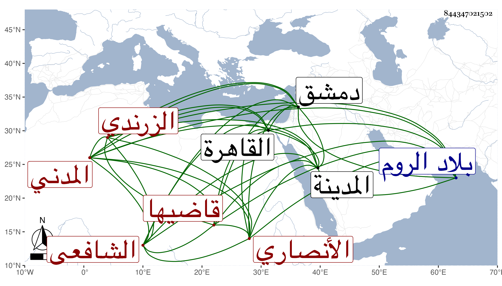

0902Sakhawi.DawLamic.ITO20230111-ara1.EIS1600.844347021502
Biography ID: 844347021502
420
محمد بن محمد بن علي بن يوسف البهاء أبو البقاء بن المحب الأنصاري الزرندي المدني قاضيها الشافعي أخو عمر الماضي وهذا الأكبر قال شيخنا في إنبائه : ولي قضاء المدينة وإمامتها وخطابتها في سنة تسع وثمانمائة ثم عزل يعني بعد زيادة على نصف سنة باشر فيها بنكد فدخل دمشق ثم الروم فانقطع خبره ثم قدم . ومات بالقاهرة في الطاعون سنة اثنتين وعشرين . قلت وكان قد سمع على الجمال الأميوطي والزين المراغي والعلم بن السقا وتفقه بالجمال الكازروني وتزوج ابنته واستولدها أولادا وقرأ عليه يوسف بن محمد الزرندي في البخاري بالروضة .
